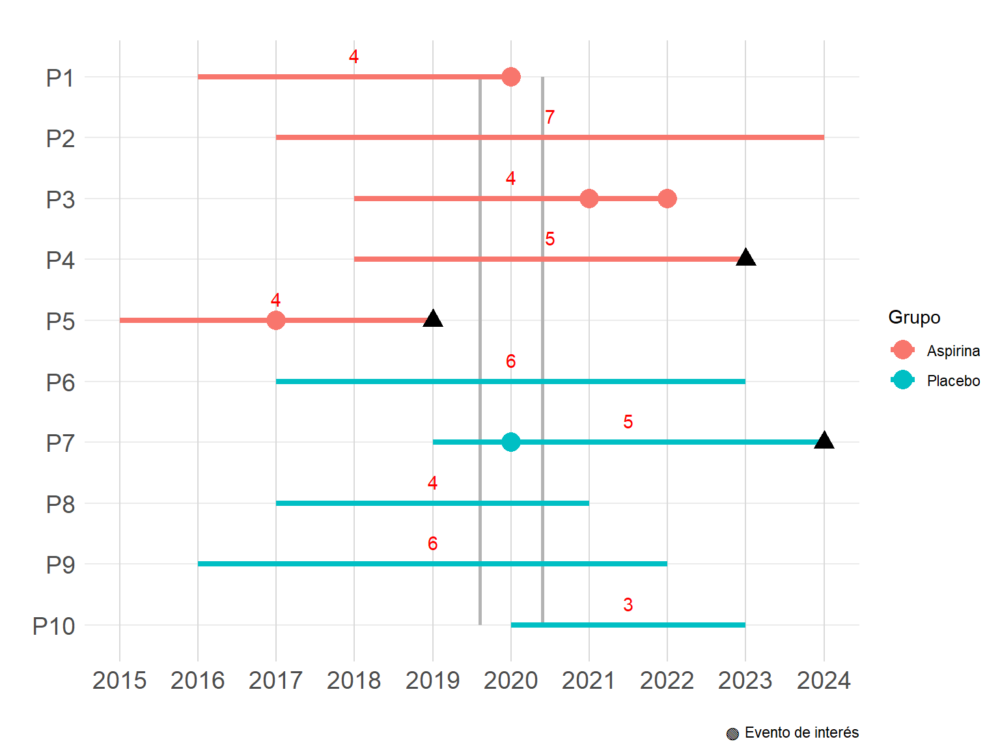
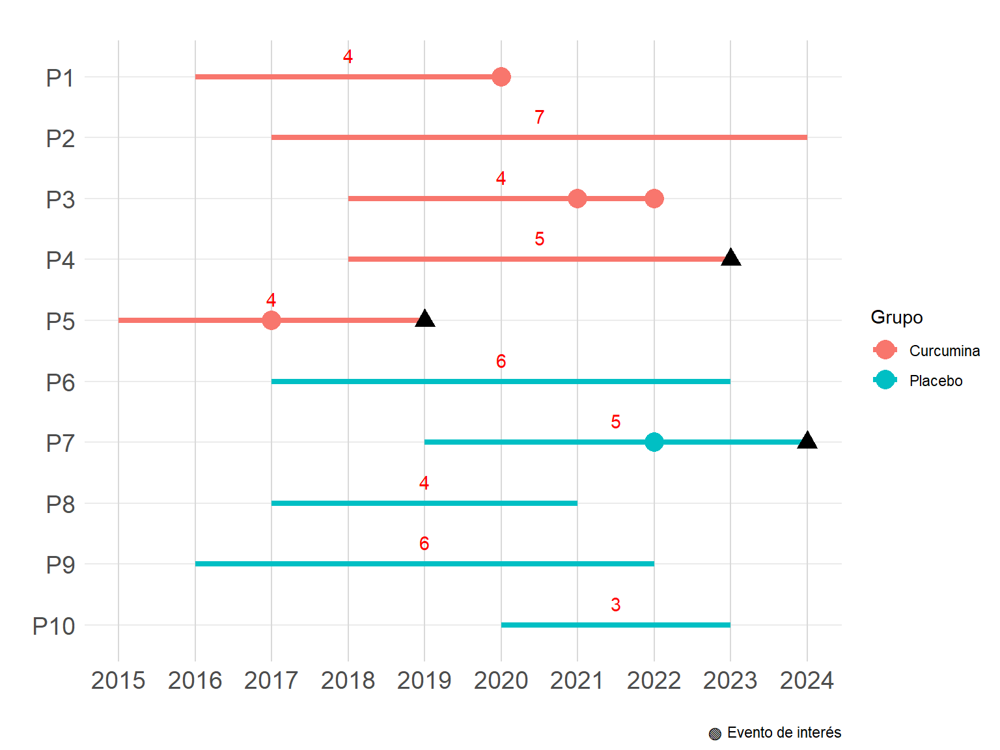
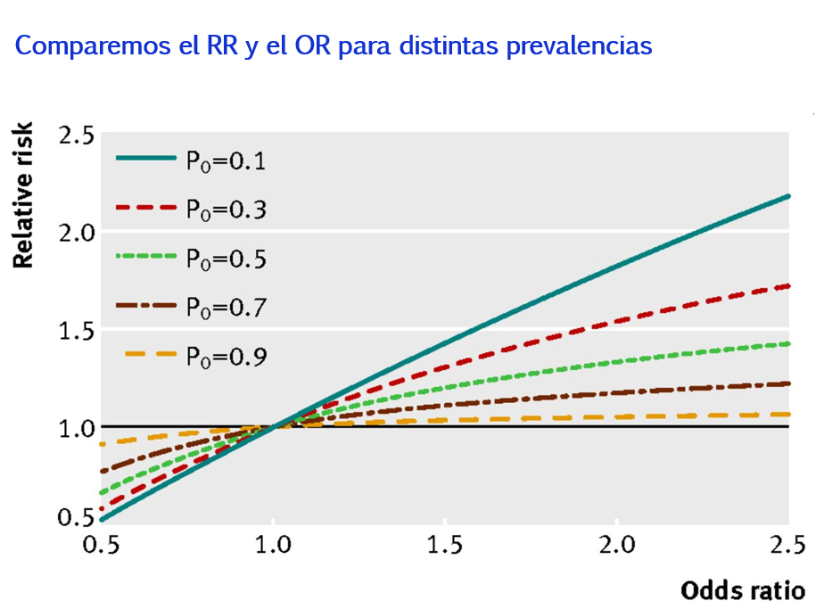
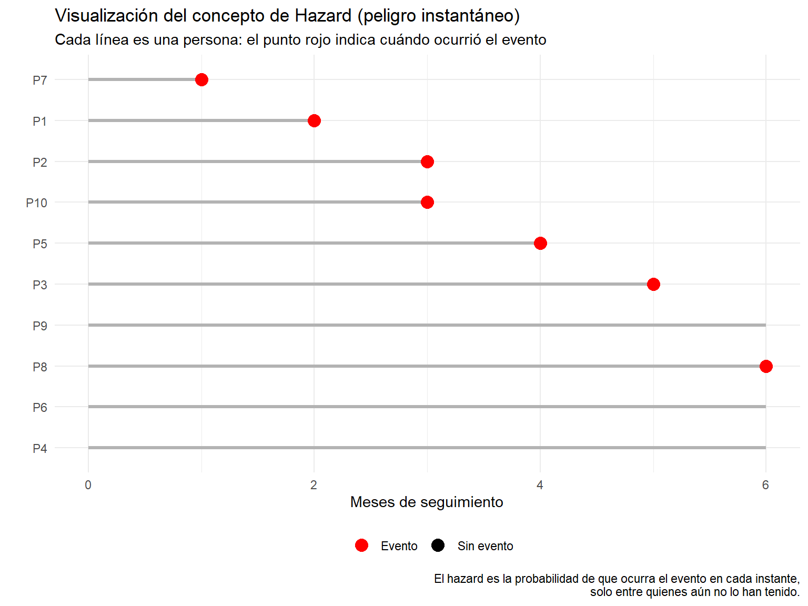
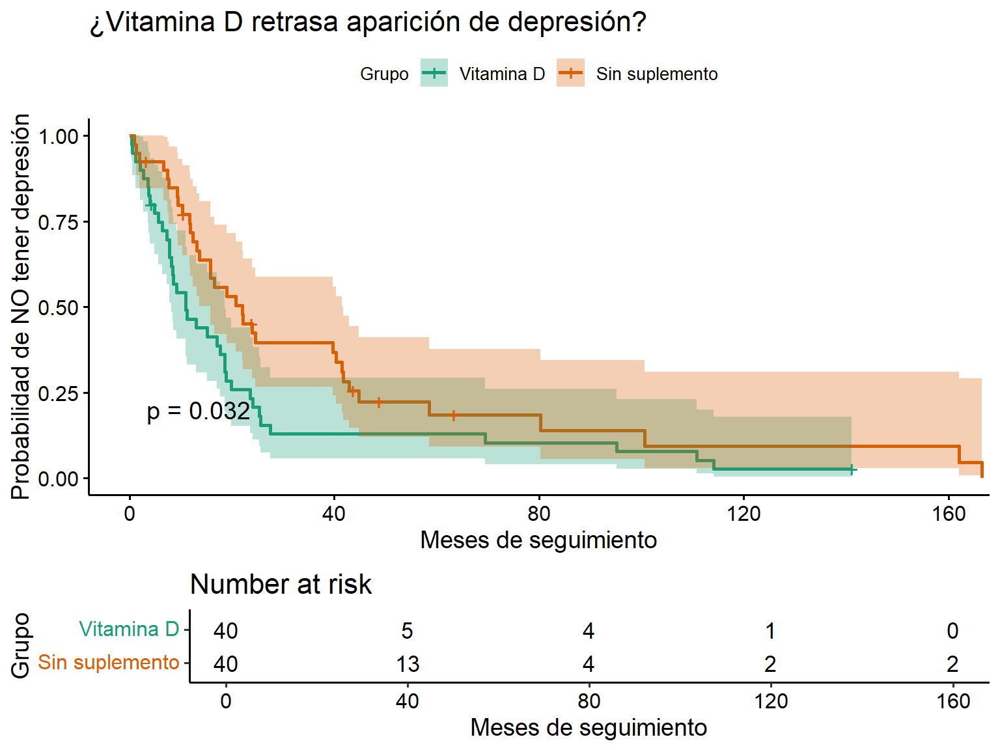
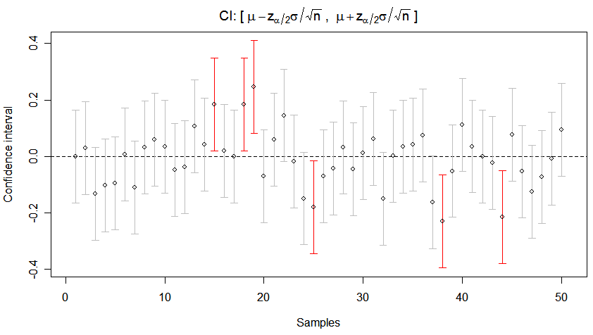

8 Medidas de Asociación
Las medidas de asociación son estadísticos que describen la relación entre una exposición (o factor) y un desenlace. Se utilizan principalmente en estudios epidemiológicos y clínicos para cuantificar cuánto influye una exposición en la probabilidad de desarrollar una enfermedad o un evento de salud.
8.1 Razón de Prevalencias (RP)
Definición: Es una medida que compara la prevalencia de una enfermedad entre expuestos y no expuestos.
\(\text{RP} = \frac{P_{\text{expuestos}}}{P_{\text{no expuestos}}}\)
Ejemplo con formato PICO:
¿El uso de aspirina podrá reducir la prevalencia de infarto agudo de miocardio en los astronautas que viajaron a Marte durante 2020?
P: astronautas que viajaron a Marte durante 2020
I: Uso de aspirina (cualquier uso? cualquier dosis? por cualquier tiempo?)
C: No uso de aspirina (uso de placebo?)
O: Infarto de miocardio
Warning!
Para que podamos comprender mejor la relacion causal entre 2 variables es importante que conozcamos todos los detalles sobre la intervención (supuesto de consistencia), este punto se aboradará en un proximo capítulo.
Con respecto a los desenlaces, siempre es preferible la evaluación de todos lo potenciales efectos (beneficios y daños), ya que solo así se podrá tener un panorama más competo para recomendar o no una intervención.
En 2020 la prevalencia de IM entre aquellos que tomaron aspirina fue de \({1/4} = \text{25%}\), mientras que la prevalencia en aquellos que no tomaron la aspirina fue de \({1/5} = \text{20%}\)
Entonces, la razón de prevalencia será \(\text{25% / 20%} = 1.25\)
Interpretación
RP = 1 → No hay asociación.
RP > 1 → Mayor prevalencia en el grupo expuesto
RP < 1 → Mayor prevalencia en el grupo no expuesto
En los astronautas evaluados, la prevalencia de tener el antecedente de infarto de miocardio fue 25% mayor (1.25 - 1) entre los que usaron aspirina, con respecto al grupo que no la usaron.
Dado que las RP provienen de estudios trasversales (donde en la mayoría de casos no se tiene certeza sobre si la exposición fue antes o despues al desenlace), no podemos hablar de una relación causal. Además, los datos podrían mostrar resultados que no son coherentes con el resto de literatura por limitar la evaluación a un momento dado (veremos que en estudios que tienen en cuenta el tiempo, estudios retro o prospectivos, pueden mejorar nuestro entendimiento de las relaciones)
Interpretación de RP = 1
En los astronautas evaluados, la prevalencia de tener el antecedente de infarto de miocardio fue igual entre los que usaron aspirina y los que no la usaron.
Interpretación de RP = 0.64
En los astronautas evaluados, la prevalencia de tener el antecedente de infarto de miocardio fue 36% menor (0.64 - 1) entre los que usaron aspirina, con respecto al grupo que no la usaron.
8.2 Riesgo Relativo (RR)
Definición: Relación entre el riesgo de enfermar en expuestos y no expuestos.
\(\text{RR} = \frac{\text{riesgo en expuestos}}{\text{riesgo en no expuestos}}\)
¡Atención!
La palabra “riesgo” hace referencia a que se conoce que en un momento dado no se presenta el evento, pero tiene posibilidad de desarrollar dicho evento. Es por ello, que se prefiere reservar dicho termino en estudios que conocen de la temporalidad.
Ejemplo con formato PICO:
¿El uso de curcumina (sustancia obetenida de la curcuma) podrá reducir la incidencia de infarto agudo de miocardio en los astronautas que viajaron a Marte?
P: astronautas que viajaron a Marte entre 2015 y 2024
I: Inicio del uso de curcumina a 4 gr/día por lo menos durante 3 meses (ahora si sabemos que todas las lineas rojas indican que cumplieron con este criterio)
C: Inicio del uso de placebo
O: Infarto de miocardio

Entre 2015 y 2024 la incidencia de IM entre aquellos que tomaron curcumina fue de \({3/5} = \text{60%}\), mientras que la incidencia en aquellos que no tomaron la curcumina fue de \({1/5} = \text{20%}\)
Entonces, el riesgo relativo será \(\text{60% / 20%} = 3.00\)
Interpretación
RR = 1 → No hay asociación.
RR > 1 → Mayor incidencia en el grupo expuesto (si es observacional) o grupo de intervención (si es un ensayo clinico)
RR < 1 → Mayor incidencia en el grupo no expuesto
Opción A: En los astronautas evaluados, la incidencia de desarrollar un infarto de miocardio fue 200% mayor (3 - 1) entre los que usaron curcumina, con respecto al grupo que no la usaron.
Opción B: En los astronautas evaluados, la incidencia de desarrollar un infarto de miocardio entre los que usaron curcumina fue 3 veces mayor con respecto al grupo que no la usaron.
Interpretación de RR = 1
En los astronautas evaluados, la incidencia de infarto de miocardio fue igual entre los que usaron curcumina y los que no la usaron.
Interpretación de RR = 0.84
En los astronautas evaluados, la incidencia de infarto de miocardio fue 16% menor (0.84 - 1) entre los que usaron curcumina, con respecto al grupo que no la usaron.
8.3 Razón de tasa de incidencia (RTI)
La RTI se define como la razón entre dos tasas de incidencia.
\(\text{RTI} = \frac{\text{TI en expuestos}}{\text{TI en no expuestos}}\)
Ejemplo con formato PICO:
¿El uso de curcumina (sustancia obetenida de la curcuma) podrá reducir la velocidad de aparición (tasa de incidencia) de infarto agudo de miocardio en los astronautas que viajaron a Marte?
P: astronautas que viajaron a Marte entre 2015 a 2024
I: Inicio del uso de curcumina a 4 gr/día por lo menos durante 3 meses (ahora si sabemos que todas las lineas rojas indican que cumplieron con este criterio)
C: Inicio del uso de placebo
O: Infarto de miocardio

Entre 2015 y 2024 la velocidad de desarrollo (tasa de incidencia) de IM entre aquellos que tomaron curcumina fue de \(\text{3 eventos / 21 personas-año} = \text{14.3 eventos por 100 personas-año de seguimiento}\), mientras que la velocidad de desarrollo en aquellos que no tomaron la curcumina fue de \(\text{1 eventos / 22 personas-año} = \text{4.5 eventos por 100 personas-año de seguimiento}\)
Entonces, el RTI será \(\text{14.3 / 4.5} = 3.18\)
Interpretación
RTI = 1 → No hay asociación.
RTI > 1 → Mayor velocidad de aparición en el grupo expuesto (si es observacional) o grupo de intervención (si es un ensayo clinico)
RTI < 1 → Mayor velocidad de aparición en el grupo no expuesto
Opción A: En los astronautas evaluados, la tasa de incidencia de infarto de miocardio en el grupo que usó curcumina fue 218% mayor (3.18 - 1) con respecto al grupo que no la usó.
Opción B: En los astronautas evaluados, la tasa de incidencia de infarto de miocardio en el grupo que usó curcumina fue 3.18 veces mayor con respecto al grupo que no la usó.
Interpretación de RR = 1
En los astronautas evaluados, la tasa de incidencia de infarto de miocardio fue igual entre los que usaron curcumina y los que no la usaron.
Interpretación de RR = 0.84
En los astronautas evaluados, la tasa de incidencia de infarto de miocardio fue 16% menor (0.84 - 1) entre los que usaron curcumina, con respecto al grupo que no la usaron.
8.3.1 🔍 ¿Cuándo el RTI ≈ RR?
La RTI será aproximadamente igual al RR cuando se cumplen estas condiciones:
El tiempo de seguimiento es el mismo para todos los individuos (o muy similar entre grupos).
El evento es raro (baja incidencia), lo que hace que la probabilidad y la tasa se comporten de forma parecida.
Pérdida mínima de seguimiento o censura (es decir, la mayoría de los individuos completan el periodo de observación).
El riesgo no varía mucho con el tiempo (es decir, la incidencia es constante).
8.3.2 ⚠️ Diferencias clave
| Medida | ¿Qué mide? | Requiere tiempo-persona | Útil cuando hay… |
|---|---|---|---|
| RR | Proporción de personas que desarrollan el evento en un periodo determinado | ❌ No | Riesgos acumulados |
| RTI | Velocidad a la que ocurren los eventos por unidad de tiempo | ✅ Sí | Seguimiento desigual o censura |
8.4 Odds Ratio (OR)
La OR se define como la razón entre las odds entre los casos (grupo eexpuesto) y los controles (grupo no expuesto). Se usa frecuentemente en estudios de casos y controles.
\(\text{OR} = \frac{\text{odds en expuestos}}{\text{odds en no expuestos}}\)
Un odds (o momio) es la razón entre la probabilidad de que ocurra un evento y la probabilidad de que no ocurra.
\[odds = \frac{𝑝} {1 − 𝑝}\]
Por ejemplo, si la probabilidad de ganar un juego es 0.2 (20%), entonces el odds de ganar es:
\[odds = \frac{0.2} {1 − 0.2} = \frac{0.2} {0.8} = 0.25\]
Esto significa que hay 1 oportunidad de ganar por cada 4 de perder.
¡Atención!
La OR no es un riesgo y puede sobreestimar la asociación cuando los eventos son comunes (prevalencia o incidencia > 10%). Es una buena aproximación del RR solo cuando la prevalencia del evento es baja (<10%).
Es por ello, que es preferible usar RP o RR en lugar del OR
 Nota que el valor el RR y OR solo coinciden cuando la prevalencia es baja (P0=0.1, linea azul)
Ejemplo con formato PICO:
¿El consumo de bebidas energizantes (con cafeína y taurina) se asocia con mayor ocurrencia de fibrilación auricular en pilotos de aviones comerciales?
P: Pilotos de vuelos comerciales
I: Consumo regular de bebidas energizantes
C: No consumo de bebidas energizantes
O: Fibrilación auricular
Exposición
Evento Energizantes No Energizantes
FA 18 12
No FA 6 24La odds de FA en expuestos = 18/12 = 1.5 La odds de FA en no expuestos = 6/24 = 0.25
\(\text{OR} = \frac{\text{1.5}}{\text{0.25}} = \text{6.0}\)
Interpretación
OR = 1 → No hay asociación.
OR > 1 → Mayor odds del evento en el grupo expuesto.
OR < 1 → Menor odds del evento en el grupo expuesto.
Opción A: En los pilotos evaluados, la odds de presentar fibrilación auricular fue 500% mayor entre quienes consumían bebidas energizantes.
Opción B: En los pilotos evaluados, la odds de presentar fibrilación auricular fue 6 veces mayor entre quienes consumían bebidas energizantes.
Interpretación de OR = 1: No hay diferencia en la odds de FA entre expuestos y no expuestos.
Interpretación de OR = 0.6: La odds de FA fue 40% menor en los expuestos.
8.5 Hazard Ratio (HR)
El HR compara la velocidad instantánea de ocurrencia del evento en dos grupos. Se usa principalmente en análisis de supervivencia.
\(\text{HR} = \frac{\text{tasa instantanea de evento en expuestos}}{\text{tasa instantanea de evento en no expuestos}}\)
¿Qué es un “hazard”?
Es la probabilidad de que ocurra un evento en un instante específico, en quienes aún no lo han tenido. Es como un “riesgo en tiempo real”.
En cada instante de tiempo, el hazard es la probabilidad de que alguien que aún no ha tenido el evento lo tenga en ese instante.

👉 Por ejemplo, en el mes 2, hay 8 personas aún en seguimiento (P1 no se cuenta porque ya tiene el evento). Si 2 de ellas presenta el evento durante el siguiente mes, el hazard en ese instante (mes 3) es 2/8.
Ejemplo con formato PICO:
¿El uso diario de vitamina D retrasa la aparición de depresión clínica en adultos mayores?
P: Adultos mayores de 65 años sin depresión al inicio
I: Suplementación diaria con vitamina D
C: No suplementación
O: Aparición de depresión clínica (diagnóstico confirmado)

Interpretación
HR = 1 → No hay diferencia entre grupos.
HR > 1 → El evento ocurre más rápido en el grupo expuesto.
HR < 1 → El evento ocurre más lento en el grupo expuesto.
Opción A: El uso de vitamina D redujo en 50% el hazard (riesgo instantáneo) de desarrollar depresión durante el seguimiento.
Opción B: En cada momento del estudio, el grupo con vitamina D tenía en promedio la mitad del riesgo de desarrollar depresión comparado con el grupo sin suplemento.
Nota: si aún no te queda claro el concepto de HR, este será desarrollado a más detale en el capítulo de “Análisis de supervivencia”
8.6 📊 Inferencia clásica vs. inferencia bayesiana
Cuando los investigadores analizan datos, su objetivo no es solo describir lo que ven, sino inferir conclusiones más allá de la muestra, hacia una población más amplia. Este proceso se llama inferencia estadística, y existen distintos enfoques para llevarlo a cabo.
A lo largo del siglo XX, el enfoque más común fue el frecuentista, basado en conceptos como el valor p y los intervalos de confianza. Sin embargo, en las últimas décadas, ha ganado terreno el enfoque bayesiano, que introduce una lógica más flexible al permitir incorporar información previa y actualizarla con los datos observados.
Ambos enfoques responden preguntas diferentes, tienen ventajas particulares y limitaciones importantes. Entender sus diferencias no solo mejora la interpretación de los resultados, sino que también permite elegir la herramienta más adecuada según el contexto clínico o científico.
En esta sección, compararemos estos dos paradigmas para ayudarte a comprender cómo se construyen y se interpretan las pruebas estadísticas más allá de los números.
8.6.1 ✅ Enfoque clásico (frecuentista) – Valor p
Cuando usamos medidas de asociación como el riesgo relativo (RR), la razón de tasas de incidencia (RTI), el odds ratio (OR) o el hazard ratio (HR), no solo nos interesa conocer su valor puntual. También queremos saber si esa asociación es estadísticamente significativa y con qué precisión fue estimada. Para eso usamos:
El valor p (o p-value)
El intervalo de confianza al 95% (IC 95%)
8.6.1.1 Valor p
El valor p nos indica la probabilidad de obtener un resultado tan extremo (o más) como el observado, si la hipótesis nula fuera cierta.
Hipótesis nula (H₀): No hay asociación (por ejemplo, RR = 1, OR = 1, HR = 1).
Un valor p pequeño sugiere que los resultados serían poco probables si no hubiera asociación → evidencia contra H₀.
⚠️ ¡Importante!
El valor p NO dice cuán grande o importante es la asociación.
El valor p NO indica la probabilidad de que la hipótesis nula sea verdadera.
Regla general:
- Si p < 0.05 → se considera que hay evidencia estadísticamente significativa de asociación.
8.6.1.2 Intervalo de confianza al 95% (IC 95%)
El IC 95% es un rango de valores plausibles para la medida de asociación. Nos dice:
“Si repitiéramos el estudio muchas veces, en el 95% de los casos el IC incluiría el valor verdadero del parámetro”.

8.6.1.2.1 ¿Cómo se interpreta?
Si el IC incluye el valor nulo (por ejemplo, 1 en RR, OR, HR) → no hay significancia estadística.
Si el IC no incluye el valor nulo → hay evidencia estadísticamente significativa.
8.6.1.3 📌 Ejemplo
Supongamos que encontramos:
- HR = 1.85; IC 95%: 1.15 a 2.96; Valor p = 0.011
8.6.1.3.1 Interpretación:
El hazard de presentar el evento fue 1.85 veces mayor en el grupo tratado comparado con el control. Esta asociación fue estadísticamente significativa (p < 0.05), y el intervalo de confianza sugiere que el valor verdadero del HR podría estar entre 1.15 y 2.96 con un 95% de confianza.
8.7 Referencias
- Zafra-Tanaka JH, Taype-Rondan A, Fernandez-Guzman D. Cómo entender las medidas de efecto en la investigación clínica: Interpretación práctica y aplicación. Revista del Cuerpo Medico Hospital Nacional Almanzor Aguinaga Asenjo. 2023;16. Disponible en: https://cmhnaaa.org.pe/ojs/index.php/rcmhnaaa/article/view/1935
8.8 Disclaimer
- Esta sección fue editada usando ChatGPT.